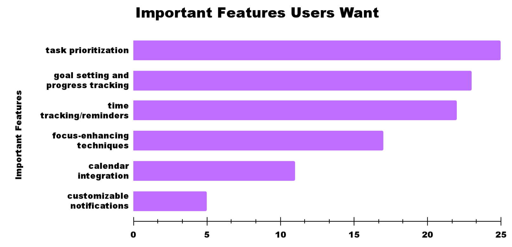
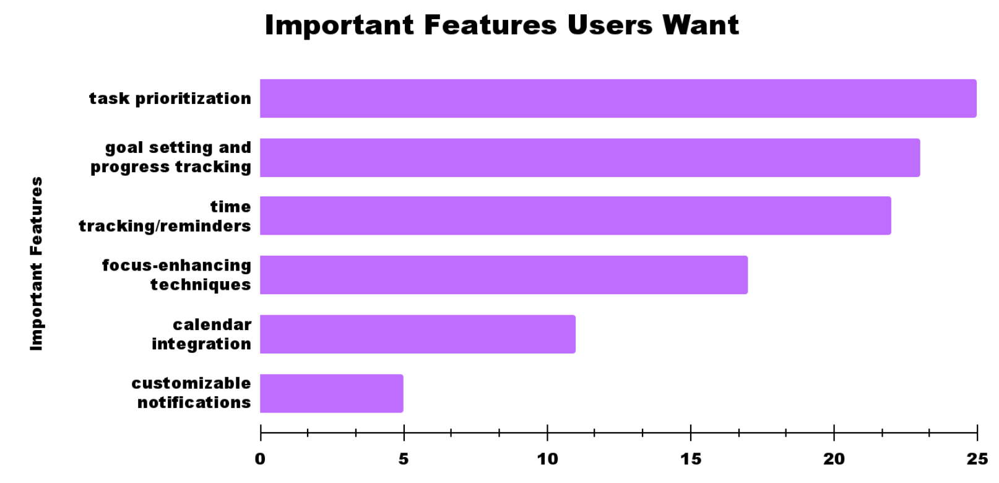
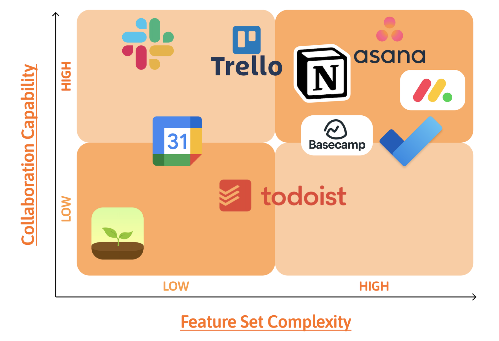
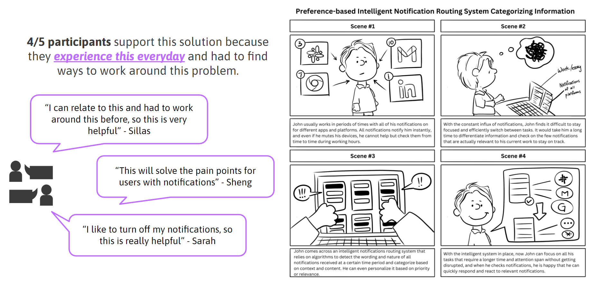
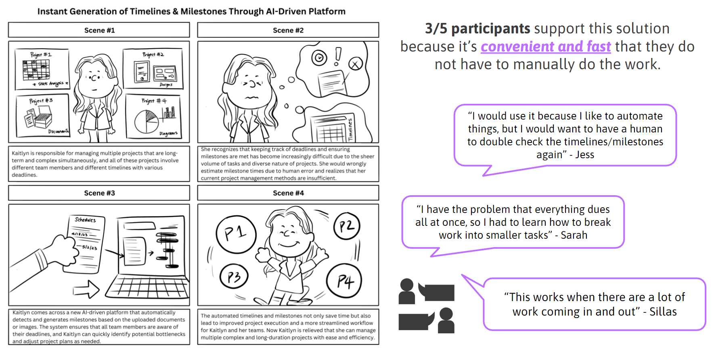
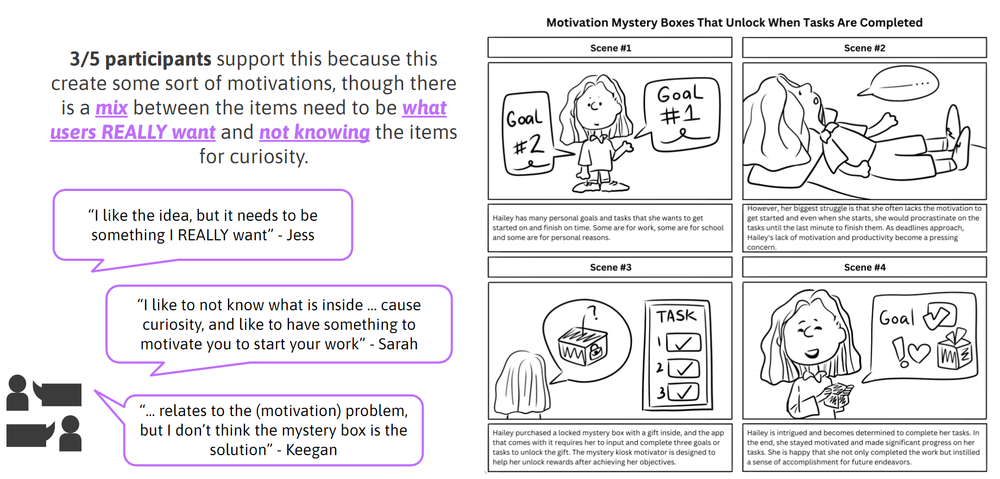

Transform the way you plan projects. Let us give you a head start of your project by providing you a plan with milestones and timeline. You have the freedom to adjust the timeline based on your own schedule.
"Curious how our team created this product?😉
Follow the arrow!"

Project Manager, UI/UX, Graphic Designer, Analyst, Web Writer
Cindy Peng, Doan Duong, Shawn Kim, Lawrence Song
April 2023 - Present
The motivation behind exploring this topic stems from its importance and productivity, which are primarily gained through experience rather than formal education. This topic has a profound impact on personal and organizational performance, growth, and success. As college students, we are particularly interested in understanding how to reduce distractions and enhance focus. Additionally, we aim to investigate how managers can effectively supervise their teams while fulfilling their own responsibilities to ensure successful project management.
The problem lies in the cumbersome manual work involved in project planning,
where project managers often face challenges in breaking down large projects into
smaller milestones, and creating effective timelines that prevent overwhelm and
encourage proactive execution.
How might we create a unified and user-friendly project planning platform that breaks down
projects into manageable milestones and timeline through automation?
Introducing Plauto, an automated project planning solution that revolutionizes
the process by allowing users to upload project descriptions and deadlines.
Plauto scans the information and generates a comprehensive plan with a timeline,
enabling users to initiate their work while retaining the freedom to customize
their schedule according to their individual preferences and availability.

From our SET analysis, we saw some interesting topics that people are still struggling with attention and productivity. Through our online research, we found some of the main problems that people are experiencing relating to time management, distractions, remote work, and the information/functionality overload of some applications.
From our online research, we discovered many challenges in terms of attention and productivity. The problems in time management arise from blurred boundaries between work and personal life due to remote work, managers setting unrealistic deadlines resulting in a messy timeline for team members, distractions caused by social media algorithms and mobile devices, the shift to virtual meetings in post-COVID era, and the overwhelming abundance of information and functionality overload.
Here we conduct surveys to understand our stakeholders needs/desires. Based on our SET analysis and online research, the goal for the survey is to explore the cause of distraction, identify user pain points around existing tools, and recognize important productivity features.
The target audience for our survey includes non-UCSD students (high school & college), working professionals, former supervisors, mentors, and we plan to distribute it through various channels such as email outreach to supervisors and mentors, reaching out to student organization advisors, and posting on LinkedIn to engage with a wider network of working professionals.
 

Based on our survey, we discovered that new users often struggle with the learning curve of current planning platforms, and task prioritization emerged as the most important feature desired by nearly 100% of participants. To investigate further, we looked into various project planning applications to assess their effectiveness in aiding task prioritization and see how users are reacting while using the platforms. Although these applications offer many features like personalization, customization, team collaboration, and integration with other platforms, it is true that the tools can be quite complex for users with little experience or technical knowledge.

Up until this point, we have been focused on creating a single
project management platform that could address various challenges such as distractions,
learning curves, collaboration, and project planning problems. However, we recognized this
might be a potential risk for our project if we continue on this path, attempting to solve all
these problems simultaneously instead of focusing on one specific issue. Consequently, we decided
to pivot our project direction and start to formulate new five different “How Might We” questions and devise corresponding needs and solutions for each problem, which guide us in creating storyboards for our revised approach.
The five problems include: notification distractions, learning curve & adaptability,
team collaboration & accountability, manual planning and timeline, remote work challenges,
and motivation to start working.
How might we develop an intelligent notification filtering system that prioritizes relevant conversations and minimizes distractions, enabling users to efficiently complete their work and stay engaged on the platform?
How might we utilize AI technology to automate manual work and tedious processes while still preserving space for creativity and necessary thinking processes?
How might we help people become more motivated to get started on things while completing tasks on time without delays during the process?
We aim to empower individuals and teams with an intelligent, personalized, and organizational productivity platform that minimizes distractions and simplifies project planning.